Step 5: Test Case Generation
Contents
Introduction
In this section, we are going to collect coverage on our cruise control module using the test harness model with the initial set of input test vectors. The coverage analysis from running these test vector provided high but partial model coverage. As before we are going to run these initial test cases in Simulink Test but this time we will ask Simulink Design Verifier to generate the test cases to cover the missing coverage objectives. The test generation tool can ignore the already satisfied objectives and only create test cases that when combined with the inital test vectors provide complete model coverage. This is typically called a "top-it-off" test generation workflow. In this step we will see how the integration of Simulink Test and Simulink Design Verifier supports this workflow.
This step is a prerequisite to the next step Code Verification where we will perform "equivalence testing". In order to verify equivalent behaviors between the model and the generated code, the comparison analysis requires 100% model coverage, input test vectors. In addition we will verify that the code generation did not create unintended functionality by comparing model and code coverage. With 100% model coverage, sections of the code with incomplete coverage may indicate possible unintended functionality.
In our previous step we were able to analyze the coverage results on the model, identify missing requirements and incomplete test cases to achieve 100% coverage. On a more complex model or within a tight development schedule, a "top-it-off" workflow is often used to quickly create a set of test vectors to support equivalence testing. A side benefit to the test generation is to identify dead logic when the test generation procedure reports certain coverage objectives as "unsatisfiable" although this is now typically done with the Design Error Detection feature of Simulink Design Verifier.
In addition we will look at generating tests based on requirements. For these tests the functional behavior of the requirements is modeled. Simulink Design Verifier will generate a test based on the conditions of the functional behavior model. The technique can be applied to critical behaviors or to completely demonstrate behavior compliance to the requirements. Generally the additional effort to create the behavior models is best applied to the critical or safety related behaviors.
Verification and Validation Tools Used
- Simulink Test
- Simulink Verification and Validation
- Simulink Design Verifier
Collect Initial Model Coverage with Simulink Test
As we said in the introduction we will be using our partial coverage test harness model with the (14) test cases from the previous step but with a "Cruise Control" model with all the previous bug fixes. Simulink Test will be used to run the tests and collect the intial coverage.
Do the following:
1. Load the Simulink Test, Test Manager configuration file named "topItOff" - click here.
2. Navigate to the test case "Partial Cov" and analyze the configuration.
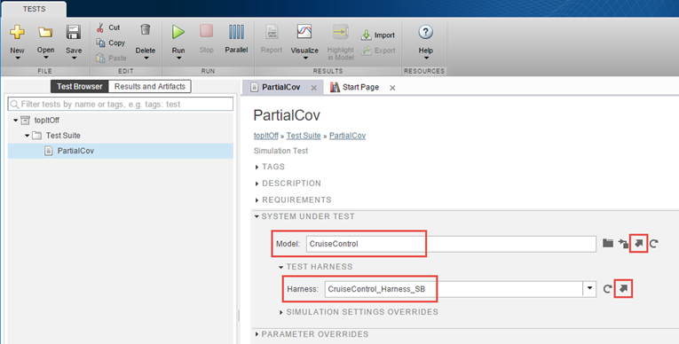
3. We will use the Test Manager to open the "Cruise Control" model with all the bug fixes including the logic issue we found in the last step. Open the "Cruise Control" model by clicking the "arrow" next to the Model field.
We will be generating test cases on a production version that is ready for code generation. Typically test cases are generated on a production version to support equivalence testing to verify the behavior of the model and code match. We will run the equivalence test in the next step Component Code Verification. For now review the production version to confirm the model contains the bug fixes.
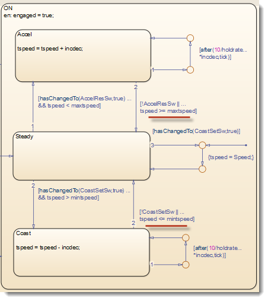
4. Open the test harness "CruiseControl_Harness_SB" containing the partial coverage test vectors by clicking on the "arrow" next to the Harness field.

Confirm the test harness model contains the partial coverage test vectors.

The Test Manager configuration is very similar to what was configured manually in the previous step Testing by Simulation. It has been configured for you so we can focus on test generation for coverage. The details of how to configure the Test Manager can be found in the previous step Testing by Simulation. Let's review the test case configuration.
5. Return to the Test Manager to check that the Signal Builder test cases have been configured to be used in the Inputs section.
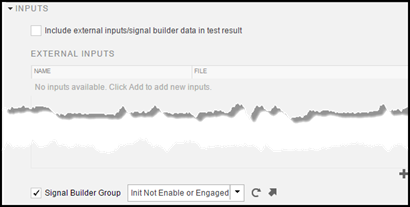
6. Examine the Iterations configuration to see that we will iterate across the (14) Signal Builder test cases. Notice the Scripted Iterations method is being so select Show Iterations to confirm the (14) initial test cases will be executed.
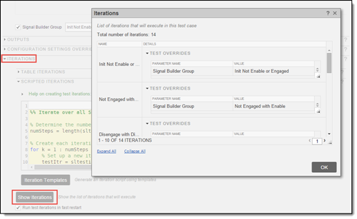
7. Check the file level coverage settings configuration to see that decision, condition and MCDC coverage has been enabled at the file level and the test case level.

8. We are ready to execute the partial coverage, test vectors and collect the coverage results. At the "Partial Cov" test case level, select Run.
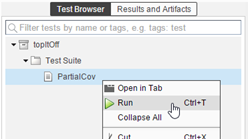
From the results, we can see that (14) test cases have been successfully executed and the model coverage has been measured.
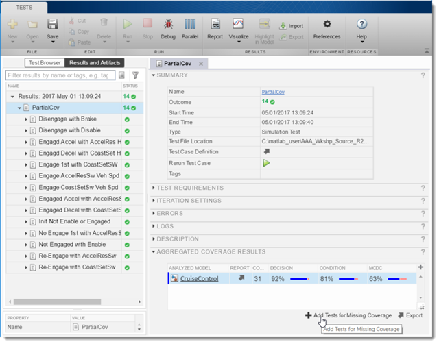
This completes the initial model coverage collection task. Next we will generate test vectors for complete coverage.
Generate Test Cases for Missing Model Coverage
The coverage results from the initial test vectors were:
- 92% Decision Coverage
- 81% Condition Coverage
- 63% MCDC Coverage
Simulink Design Verifier will be used to create additional test cases that will provide the missing coverage. When the generated test cases are executed along with the initial test cases the coverage analysis will show 100% model coverage. Now let’s see how the integration of Simulink Design Verifier facilitates the generation of these "top-it-off" test cases.
From Results Explorer pane in the Test Manager we will begin the "top-it-off" test case generation.
1. Click on Add Tests for Missing Coverage
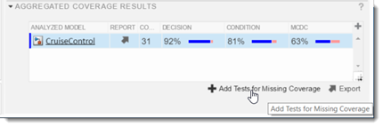
2. Populate the Add Tests for Missing Coverage dialog as shown.
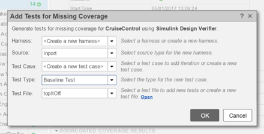
A dialog popups to show the status of the test case generation. Simulink Design Verifier is only generating test cases for the missing coverage by using the coverage results from the Test Manager.
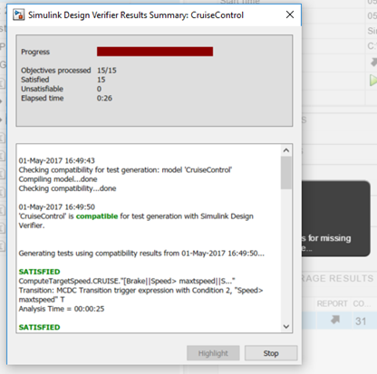
When the analysis has completed, Simulink Design Verifier has generated test cases for the (15) coverage objectives, and exports the test cases to the Test Manager in the new test case "New Test Case 1".
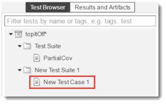
3. Cut and paste the exported test cases into the original test suite.
4. Rename exported test to "Generated"
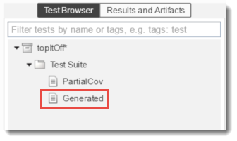
A new test case "Generated" has been created in the Test Manager. In the next section we will look at the contents of the generated test cases and run all the test cases to demonstrate full coverage.
Run Full Coverage Test Cases in Simulink Test
In the Test Manager we have a new test case that was created during the export of the generated test cases to Simulink Test. Let's examine the contents of the generated test case "Generated" and then run all the tests for the module:
1. Navigate to the test case "Generated". The test case is a Baseline Test type so the evaluation will be based on external files for the comparison.
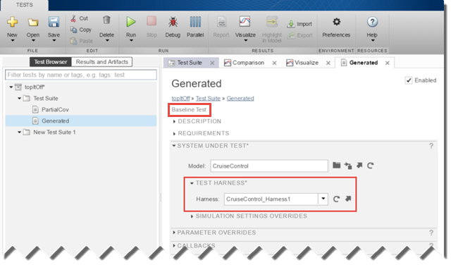
2. Looking at the SYSTEM UNDER TEST section, the Model is "CruiseControl" as expected but the Harness is the newly, generated "CruiseControl_Harness1". The harness is a Simulink Test harness that is now contained in the model.
The test case is using the Simulink Design Verifier the (8) generated test cases along with the expected results.
3. Expand the INPUTS section to see the EXTERNAL INPUTS section has been populated with test cases from the Simulink Design Verifier data file "CruiseControl_sldvdata.mat".
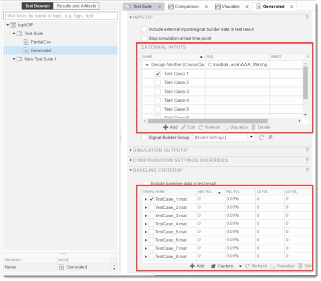
4. Expand the BASELINE CRITERIA section to see the test case has been populated with expected outputs from the test generation data file. These were included in the export as a result of configuring Design Verifier to Include expected output values.
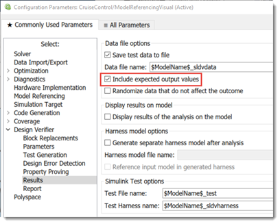
These values are outputs that were measured by executing the generated test case inputs. So these expected output test vectors may not be useful for checking the current model but will be useful for checking the generated code in the next step and for checking later versions of the model.
5. Look at the ITERATIONS section to see the test case will be iterated over the input data files and the expected output data files. Optionally check Run test iterations in fast restart.
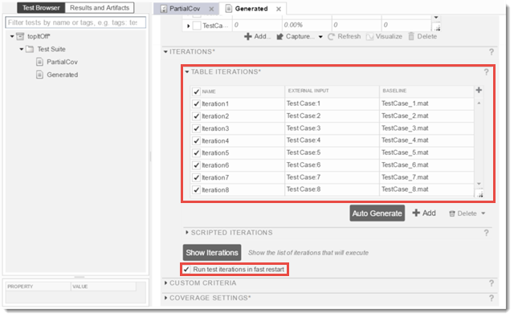
We will be executing the original, partial coverage test vectors along with the generated test vectors to produce complete coverage. As a personal choice, the generated test cases were copied into the original test suite so all the test will be executed from a single suite. This way all the test cases for the "Cruise Control" model will be contained in a single test file. But you may choose to have these in separate files depending on your process.
6. Run the tests from the "topItOff/Test Suite" level to measure the expected full coverage.
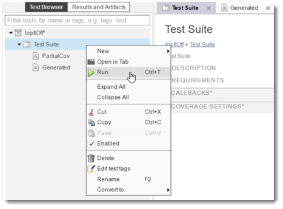
In the Results and Artifacts pane the test results show 100% coverage. Notice there are the original (14) requirements based test vectors along with the (8) coverage based generated test vectors. Depending on the available development time, the generated test cases may be used as hints that can be used to reverse engineer functional test cases from them, associate them with a requirement and create expected outputs. Generating test cases for functional objectives is discussed in the nest section. But for the purpose of equivalence testing we are ready for the next step Component Verification with these structural test cases.
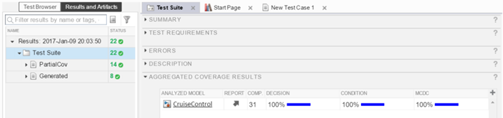
Generate a Test from a Requirements Model
In this section we will demonstrate the use of the Test Generation feature for functional tests. The behavior as described in the requirements is expressed as a model with two parts: (1) an expected action or output behavior based on (2) when a condition or event occurs. The condition can include a logical sequence of current and past inputs, and often past outputs. The expected action or output behavior model will also include current outputs.
For the first example we will return to the "Disengage With Brake" requirement and build a requirements based model for test generation.
Do the following:
1. Open the CruiseControl_TestGen_DisengageWithBrake model – click here
2. Navigate to the "Disengage with Brake" requirement in the editor.
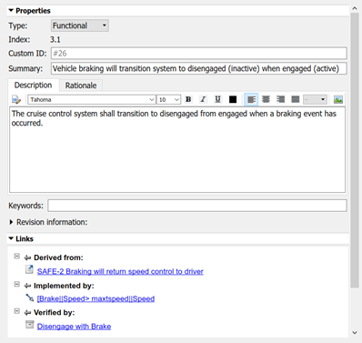
Notice this requirement is derived from a higher level safety requirement, linked to a test case and implemented by the transition "[Brake||Speed>maxtspeed||Speed<mintspeed]".
3. Select the implementation link to navigate to the model transition.
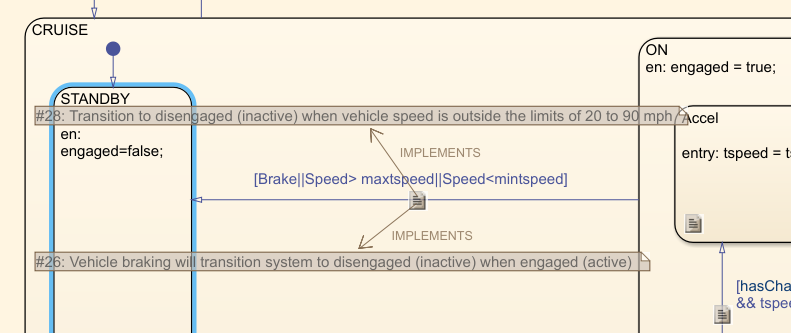
4. Determine the requirements linked to this transition.
Notice that based on the implementation and another requirement, a low or high speed can also execute the transition.
5. Navigate to the CruiseControl_TestGen_DisengageWithBrake model, and open the "Verification Subsystem".
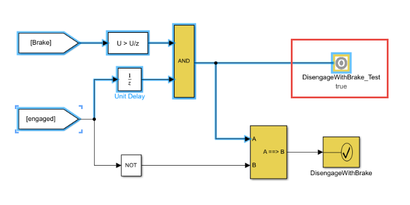
The highlighted blocks is the part of the requirements model that will be used by Design Verifier to generate the test. The test case will create the condition described in the requirement. The "DisengageWithBrake_Test" is a Test Objective block that will instruct the tool to create a test case where its input is true for at least one time step. Study the input signal to the test objective to understand how this represents the condition of the requirement.
The test case generation includes a block to constrain "Speed" signal to be between the limits of (20) and (90). The generated test will not include a "Speed" signal that could cause a disengagement to cloud the applicability of the test case.
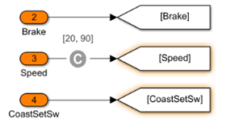
6. Generate the test case by the menu selection Analysis/Design Verifier/Generate Tests/Model
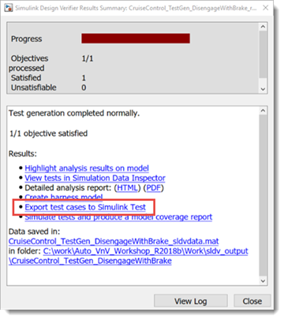
7. Select Export test cases to Simulink Test. Use the default settings to complete the export.
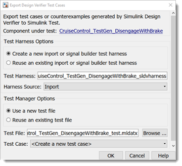
8. Run the test in the Test Manager and analyze the results.
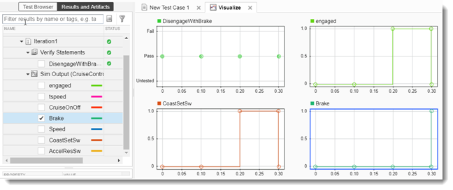
Notice the Test Manager shows a pass with a "verify" signal. How was the "verify signal" generated?
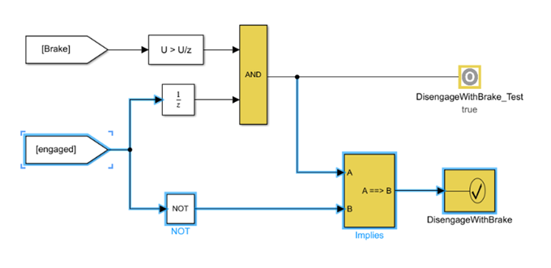
The "verify" signal was generated with highlighted blocks in the "Verification Subsystem". Looking at the "Implies" block:
- When the condition at input "A" is true
- Then the action (expected output) at "B" is expected to be true
- And the output result is true
- When the condition at input "A" is false then the output result is "true" regardless of whether "B" is true or false
The "Implies" block output is connected to an "assertion" block that creates the "verify" signal. The "assertion" provided a test result assessment to the Test Manager based on the single generated test case.
Are there other test cases that could be generated based on the "test objective" but fail the "assertion"? Meaning the implementation will not produce the expected output or action? Design Verifier provides another function known as Property Proving to prove there are no test case inputs that can fail the "assertion". If Property Proving can falsify the "assertion" or proof then it will create a test case for the user to debug the implementation. In a later step we will go into more detail but for now we will perform the Property Proving to see if there is a test case that can show the implementation will not meet the requirement.
9. Make the menu selection Analysis/Design Verifier/Prove Property/Model to perform the analysis.
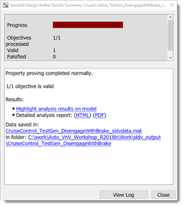
On the model the "assertion" block is colored "green" to indicate the property proof was satisfied (not falsified). In the later step we will show how property proving can be used to iteratively improve the robustness of the design.
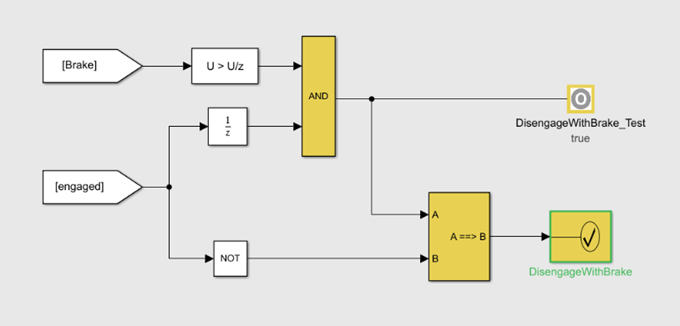
Generate Tests from a Requirements Assessment
An alternative way to express the expected requirement behavior is with a Test Assessment block. We will be using same "Disengage With Brake" requirement and build a requirements based model with a Test Assessment block for test generation. This will be a text based approach.
Do the following:
1. Open the CruiseControl_TestGen_DisengageWithBrake_Seq model – click here
2. Open the "Test Assessment" block in the harnessDisengage with Brake" requirement in the editor.
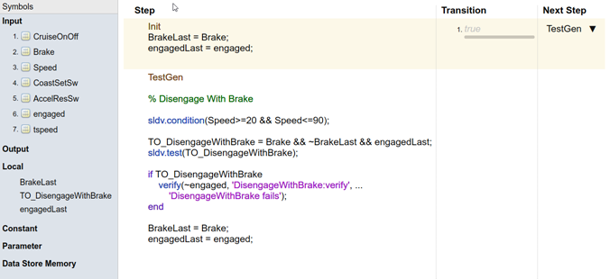
Notice the use of sldv and other commands in the assessment:
- sldv.condition(Speed>= 20 && Speed<=90) will constrain the generated test case to have the "Speed" input signal to be between (20) and (90).
- sldv.test(TO_DisengageWithBrake) is a test objective with the same function as the Test Objective in the previous section where a test case will be generated that will satisfy this objective for at least one sample.
- The test objective "Brake && ~BrakeLast && engagedLast" which is equivalent to the previous section objective where the brake has just been applied and the cruise control for the last sample was engaged.
- The test "verfiy" signal is checked when the test objective has been satisfied, otherwise it is not evaluated.
- Lastly there are commands to save the previous state of the "Brake" and "engaged" signal
3. Generate the test case by the menu selection Analysis/Design Verifier/Generate Tests/Model
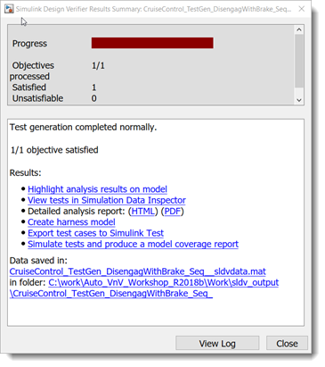
4. Select Export test cases to Simulink Test. Use the default settings to complete the export.
5. Run the test in the Test Manager and analyze the results.
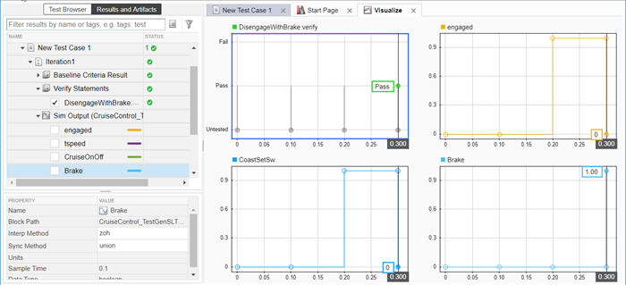
Notice the Test Manager shows a "verify" signal with a value of (untested) until the last point shows (pass).
6. Make the menu selection Analysis/Design Verifier/Prove Property/Model to perform "Property Proving" using the "verify" as a property proof.
The Test Assessment based method provides a text based approach to authoring the requirements models. Which method text model or block based is a matter of user preference. The block based method offers the benefits of showing a requirements in a block diagram which may offer an more intuitive presentation of the requirements model. To support the generation of test cases for multiple requirements both methods would likely benefit from the use of variants.
For the block based approach there are additional blocks that help with the construction of the requirements models:
- Open the base Model Verification library – click here
- Open the sldv property examples library – click here
- Open the sldv temporal operator examples library – click here
- Open the design optimization verification library – click here
Summary
We demonstrated the "top-it-off" workflow where coverage information from the partial coverage, requirements based test cases were combined with the generated test cases to achieve 100% coverage. Simuink Design Verifier was configured to use the partial coverage data file to only create test cases necessary to achieve the 100% coverage goal. Expected outputs were also included with the generated test cases that were the measured outputs with the current version of the "Cruise Control" module. We now have a test suite with 100% coverage, test vectors that can be used to evaluate newer versions of the implementation. In the next step we will use the complete Simulink Test suite to verify the outputs of the model match the generated code in the next step Code Verification.
One last item to note is there will be some additional management of the "Generated" test case to include the external files for the inputs and baseline criteria.
Next we showed requirements based test generation using a block approach using some of the additional blocks provided by Design Verifier. And then we showed a text based approach using Test Assessments a feature provided by Simulink Test. Both approaches provided the ability to reuse for Property Proving to "prove" the implementation behavior will comply to the requirement.
- When you are finished, close all models and files - or click here.
- Go to Step 6: Component Code Verification - click here.